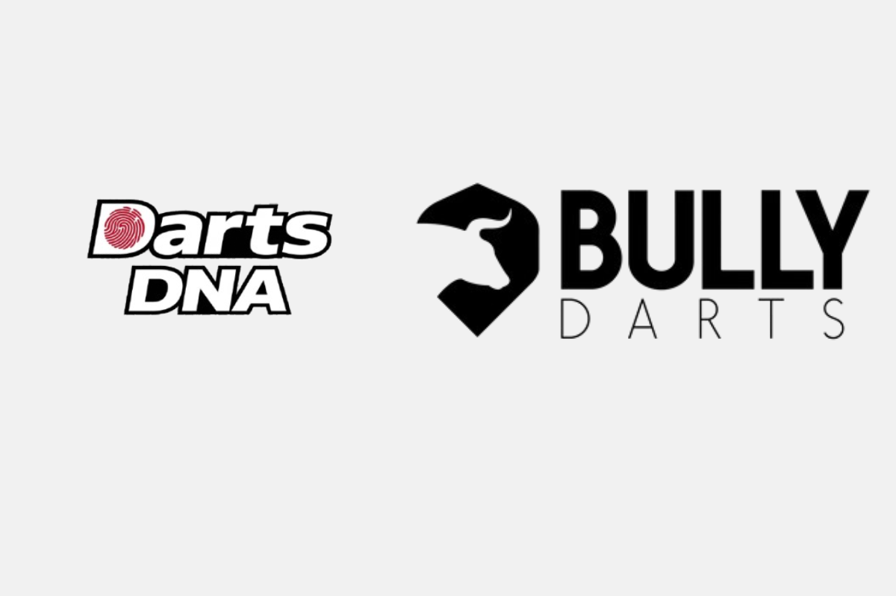
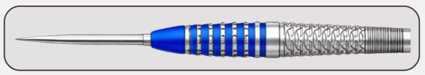

Get the right darts first time at Bully Darts
Find the right darts in seconds, Bully Darts powered by DartsDNA.
Get matched to the right barrel shape before you buy.
Most players spend years trying new darts, thinking the next set will fix everything.
DartsDNA helps you understand your throw — so you can actually choose darts that suit you.
Used by 40,000+ players across leagues, academies and online platforms.
- NO sign-up required
- Takes less than 60 seconds
- Instant results
Built to remove the guesswork from buying darts.